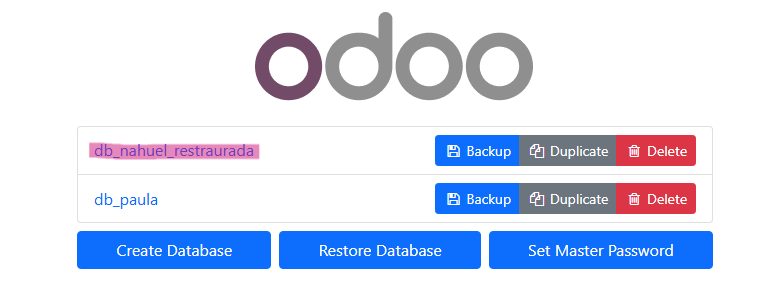

1.Proceso de copia de seguridad:
Accedemos a http://localhost:8069/web/database/manager y seleccionamos nuestra base de datos. Hacemos clic en "Backup", introducimos la contraseña maestra y descargamos el archivo .zip resultante.
Hacer clic en "Backup".
Colocar la contraseña maestra, seleccionar ".zip" y hacer clic en "Backup".
2.Restauración de la base de datos:
En el mismo panel accedemos a "Restore", seleccionamos el archivo de backup del compañero y restauramos con una nueva contraseña si es necesario.
Hacer clic en "Restore"
Seleccionar el archivo .zip, poner la contraseña de la BBDD y el nuevo nombre, luego hacer clic en "Continue"
Nahuel restaurando la base de datos de Paula
Paula restaurando la base de datos de Nahuel
Una vez restauradas las bases de datos, deberemos hacer clic sobre la restaurada para iniciar sesión.
Hacer clic en la BBDD del compañero
Iniciar sesión con las credenciales del compañero
Asi es como se veria una vez realizado el paso anterior:

Vista de la BBDD de Paula restaurada por Nahuel.
Vista de la BBDD de Nahuel restaurada por Paula.
Efectos:
- Se replican todos los módulos, configuraciones y datos del sistema original.
- Permite compartir configuraciones entre compañeros fácilmente.